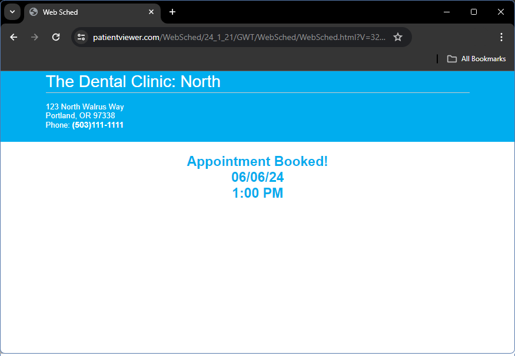

See Web Sched Feature.
Patients can click a link that navigates them to the Web Sched interface. This can be embedded on your own website or shared via text/email.
The patient is directed to answer prompts to determine what kind of appointment needs to be scheduled. 
The patient can then search for available appointment times.
Patients can enter their contact and insurance information. This information is synced back to Open Dental.
Once the patient enters their information, their appointment is booked!

After the appointment is booked, patients can be redirected to fill out intake forms via the Web Forms Feature and Automated Messaging can be used to send appointment reminders and confirmations.